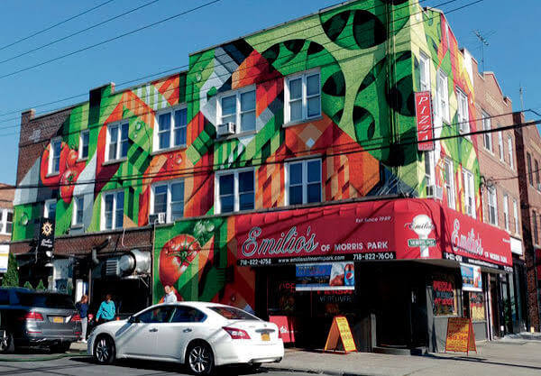

Emilio's Pizza is a local favorite in Morris Park, known for its delicious Chicken Vodka slice and friendly service. I used to go there all of my childhood. I highly recommend it to anyone visiting the neighborhood. The way the pizzeria is decorated is so charming and inviting, making it a perfect spot to enjoy a slice with family and friends.
Whether you're a local or a visitor, Emilio's Pizza is a must-try in Morris Park. The combination of delicious food, friendly staff, and a cozy atmosphere makes it a standout choice for any pizza lover.

Loreto Park is a beautiful park in Morris Park, perfect for a leisurely walk or a picnic with family and friends. It features well-maintained gardens, a playground, and plenty of open space for outdoor activities. After school everyday, I used to always go here with my dad and have the best time of my life. You meet new and old friends here and it feels just like home.
This park has been newly renovated not too long ago and during the holidays, beautiful lights are put up all around the park. It's so pleasing to the eye and makes the park feel even more magical.

Conti's Pastry Shoppe is a charming local bakery in Morris Park, famous for its fresh croissants, pastries, cakes, and the BEST cannolis. I often visit this shop with my family on weekends, and it's always a delightful experience. The aroma of freshly baked goods and the friendly staff make it a must-visit spot in the neighborhood.
Most of my family and I's birthday cakes or any occasion that we got a cake for came from Conti's. A lot of my childhood memories are tied to this place, and it always feels like a special treat when we visit. I always loved the smell when I took my first step into the shop. Within every bite, you can tell everything was made with love and care. I almost never walked out the bakery without my chocolate cannoli in hand.